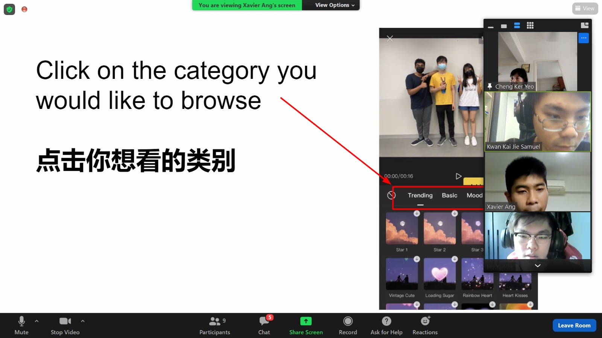

Basic Information About Me
I am Samuel, I am 18 this year, and I am a second year studen in Ngee Ann Polytechnic. I am currently Pursuing a diploma in Information Technology. I would consider myself a reflective learner, and someone who focuses on lessons learnt from failurs than failures themnselves. I am someone who analyses every side of a topic, and understand each perspective bfore making a stand. I am also willing to leand a helping help to anyone, whether they need it or not.
CCAs: Bowling Club, Overflow, Japanese Cultural Club (Cosplay Division)
Extra lessons: Japanese Language (JL2), Advanced Computing Mathematics
More Information
Click the buttons to show more information about me.
Skillsets
Skills I have picked up over the years
-
Coding Related
Python
C#
Java
Microsoft SQL
ASP.NET(HTML and C#)
Web Development(CSS, HTML and JavaScript)
Android Application Development(Java and XML)
Pygame(Python External Library)
-
Adobe Related
Photoshop
Illustrator
Adobe XD
Audition
-
Languages
English
Chinese
Japanese
-
Arts Related
Music Production
Guitar
Drums
Piano
Vocals
Achievements
Awards and Medals I have won recently
-
Singapore Mathematics Olympiad(SMO) Senior Category 2019: Bronze Medal
SMO is a mathematics competition organised by the Singapore Mathermatics Society, where students apply mathematics concepts taught in secondary school to extremely difficult Questions. This allows for a creative way of thinking, solving questions in an unorthodox manner. Obtaining a bronze medal means an exceptional understanding of mathematics, and how to apply its concepts inro problems adaptively.
-
Singapore Junior Physics Olympiad(SJPO) 2019: Honorable Mentions
Having an honorable mention in the SJPO meant I was above average amongst those who joined the olumpiad. Despite me not winning any medals, it showed I had a strong understanding of physics and SJPO introduced new topics that were extremely challenging for many people.
-
Edusave Scholarship Award 2019
Edusave Good Progress Award 2018
This award is given to students who score in the top 10% in the school. Along with the Good Progrss Award I received the year prior, it shows my growth through making mistakes during tests and exams, and how my growth had paid off.
-
Edusave Award of Achievement, Good Leadership and Service(EAGLES) 2019
This award is for those who served well, and someone who showed what a leader should be. As the vice president for the Lower Secondary, I was in charge of disciplining my juniors, and be a role model to them as well.
-
1st Place: CoSpace Grand Prix FirstSteps U19 2019
1st Place: CoSpace Grand Prix FirstSteps Singles U19 2019
This competition challenged our understanding of programming robots, and how each function should be carried out. Despite it being my first time taking part in this competition, I achieved the top position in both the overall team challenge, and also the bonus singles round. It was a step outside my comfort zone but I stepped up to the challenge.
-
2nd Runner Up: RP Renasa Grand Prix 2019 Junior Category
Despite me not being first place, I was satisfied with the results. The competition was challenging and required us to solve both software and hardware issues. The sheer number of times we had to recalibrate sensors and fix small errors in our code was all paid off with the award.
Projects
Projects that are self initiated, or school work that I am proud to showcase.
-
Pong - Made with Pygame and Python
the classic game of Pong, said to be the first mass produced video game. This was my first game I have ever made, and it taught me many things to know about game development.
-
Password Generator
Internet security is an important thing to have, especially in a technological society like ours. Use this password generator to prottect your data on the Internet.
-
Holoinfo
Hololive has blown up in popularity recently, and that means there are many new people who do not know much about its member. This website is meant to be simple but provide information for new and old followers of Hololive and its barious divisions.
-
Weather Info Finder
Find useful weather information, such as wind speed and temperature, of hundreds of cities using this website, powered by OpenWeatherMap API.
-
Trivia
A simple, 10 question trivia, that is sure to test your general knowledge.
-
Higher Or Lower
A simple game. A random number is generated, and then you type a number. You have to guess if your number is higher or lower than what was generated.
-
Math Drills
Practise your multiplications with this simple program.
-
Converter
Convert numbers into hexadecimal and octadecimal, and vice versa.
Game Projects
Web Projects
Python Projects
Reflections
Thoughts and afterword of Service Learning Projects and industry talks that I have taken part in.
-
Service Learning Project: Teaching the elderly Capcut
Evidence of involvement
My Overall thoughts on this project is that it was an enjoyable experience. Stepping out of my comfort zone to lead the class as one of the project leader let me be more confident when speaking with people, especially strangers that I have not met before. The event went smoothly, and unlike what I expected. there weren't any major issues that would have hindered the project's progress.
But this project did not just benefit me, it benefit the elderly as well. This gave them skillsets that are useful in our modern society, and this project allowed them to connect with the younger generation. With the ageing population, and the ever-increasing generation gap, this is an important benefit as it is a step towards bridging the gap.
-
Industry Talk: Google Keynote Day 1 (Google I/O 2021)
Evidence of involvement
I chose to join the Google Keynote not only because it is the only few times I can attend a Google I/O talk live, but also because Google is an industry-leading company. Understand where the competition lie, and what consumers want, is something important to someone like me who would join the tech industry in the future. Google showcased many fascinated concepts, such as using augmented reality in Google Mpas, and a new and ore complex Artificial Intellegence that makes translation sounds more natural and more like how a ntaive would phrase it. They also massively simplified android development, something I had hoped for for a long time. These improve the standard of living, which is one of the biggest goals all tech companies hope to achieve.
Overall the Google Keynote was an enjoyable experience, and a very informative talk that showcase what Google had to offer in the near future.